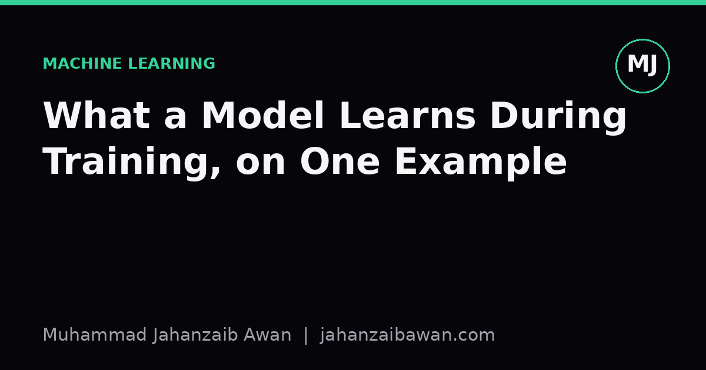
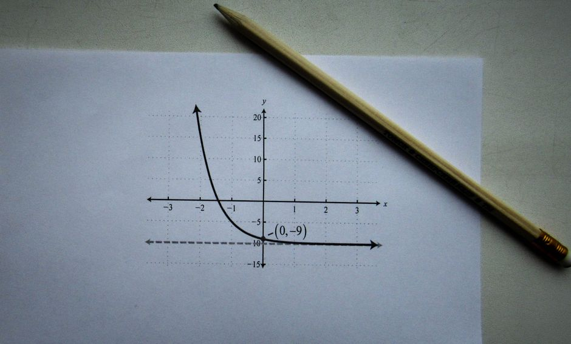

What a Model Learns During Training, on One Example
Forget the mysticism. Training a model is just repeated small corrections to a set of numbers, and you can watch it happen on a single tiny example.

Why this needs demystifying
I think a lot of confusion about machine learning comes from treating training as a black box that somehow absorbs patterns. People talk about models 'understanding' data as if something conceptual is happening inside. In practice, training is a much more mechanical process: you have some numbers called parameters, a way of scoring how wrong they currently are, and a rule for nudging them to be slightly less wrong. Repeat that nudge enough times and the numbers settle somewhere useful. That is the whole story, minus the scale.
The scale is what makes it feel mysterious. A large language model has billions of parameters being nudged by an optimiser you cannot watch directly. But the mechanism at billions of parameters is identical in kind to the mechanism at two parameters. So rather than describe training in the abstract, I want to walk through a model so small you can hold the entire thing in your head, and watch every number change.
A model with two numbers
Suppose I want to predict a house's price from its size in square metres, using a single straight line: price = weight times size plus bias. Before training, I have no idea what weight and bias should be, so I pick something arbitrary, say weight = 0 and bias = 0. My training data is deliberately tiny: three houses. A 50 square metre house sold for 150,000, a 70 square metre house sold for 210,000, and a 100 square metre house sold for 300,000. Notice this data was constructed so that price is exactly 3,000 times size; I did that on purpose so we can check the model's progress against a known answer.
With weight = 0 and bias = 0, every prediction starts at zero, which is wildly wrong. We measure wrongness with a loss function; a common choice is mean squared error, the average of (predicted minus actual) squared across the three houses. At the start, the errors are 150,000, 210,000 and 300,000, so the loss is enormous. The question training answers is: in which direction should I move weight and bias to make that loss smaller, and by how much?
That direction comes from the gradient, which is just calculus telling us the slope of the loss with respect to each parameter. For this simple squared error setup, the gradient with respect to weight is proportional to the average of (error times size), and the gradient with respect to bias is proportional to the average error. Both gradients point towards increasing weight and increasing bias, because every prediction is currently too low. Gradient descent takes a small step in the opposite direction of the gradient, scaled by a learning rate, say 0.0001 here because the numbers involved are large.

Watching the numbers move
After one update using that first batch, weight moves from 0 to roughly 2.3, and bias moves from 0 to roughly 0.03. These are rough figures to keep the arithmetic readable, but the direction and rough magnitude are what matters: weight has jumped a long way because size values are large, so their influence on the gradient dominates early on; bias has barely moved because it is not multiplied by anything. This asymmetry is worth sitting with, because it is a real practical issue, not a toy quirk: parameters attached to larger-scale inputs tend to get pushed around much more aggressively unless you normalise your features first. Scaling size down to, say, size in hundreds of square metres, would make the two parameters update at more comparable rates.
Continuing for, say, five hundred more updates, weight keeps climbing towards 3,000 and bias keeps drifting towards 0, because that happens to be the exact relationship I built into the data. At each step, the model is not reasoning about square metres or housing markets; it is purely responding to the sign and size of its current error on the examples it is shown. If the 70 square metre house had sold for 500,000 instead of 210,000, the gradient for that one example would pull weight upward sharply on that step, and the final learned weight would sit somewhere as a compromise between fitting all three houses reasonably well, rather than fitting any one perfectly.
That compromise is the real content of what a model 'learns': not a rule it has understood, but a setting of its parameters that minimises average error across the examples it has seen, under the particular loss function you chose. Change the loss function, change the data, change the learning rate, and you get a different compromise, even though the underlying relationship you are trying to capture has not changed at all. This is why two people training what looks like the same model on the same data can get noticeably different parameters: initial values, update order, and learning rate all shape which compromise the optimiser settles into.
Why this matters beyond toy examples
Everything that happens in a two-hundred-layer neural network is this same loop at vastly greater scale: compute a prediction, measure how wrong it is, compute a gradient for every parameter, nudge each parameter a tiny amount, repeat for many thousands of steps. The maths per parameter is more involved because of chained layers and nonlinear activations, but there is no additional ingredient of 'understanding' injected anywhere in the process. A model does not learn what a house is; it learns a function that reduces error on the examples you gave it, and it will happily learn a spurious shortcut if one reduces error more cheaply than the real pattern does.
This is exactly why I keep returning to leakage-aware splits and honest evaluation in my own work. If your test set shares a subtle shortcut with your training set, your tiny two-parameter house model or your billion-parameter network will both find and exploit that shortcut, and your reported performance will flatter a model that has not learned the thing you think it has. The small example above is not just a teaching toy; it is the same mechanism you are trusting every time you report an accuracy number, so it is worth being able to trace it by hand at least once.